Trojan
For the last few days, my scientific network suffered an irritating performance deficiency. As I was searching the latest SS news, I discovered a new tool, Trojan. It took me some effort to deploy the server with its certifications and keys, and the performance turns out to be quite impressive. No doubt SS is under attack, but it's so pleasing to see how scientific toolkits evolve in response to the relentless assault of the man in the middle.
To my knowledge, this kind of tool is probably about encrypting and encapsulating data from one socket and sending it to another. I have no intention to read the Trojan code to understand its precise detail. But we can get a sense of it by looking at how SS is attacked by the so-called connection replay: the man in the middle captures the packets, which by its algorithms is suspicious of being scientific, and then sends those packets to the destination server; if the server responses vacuously, then it is exposed as an outlaw. The man in the middle then breaks down the traffic, and you lose your scientific connection. The way Trojan handles the connection replay is to let the malicious packets go through; with the aid of Nginx, the attacking traffic is forwarded to a funny website, which in my case, is ietf.org, rather legitimate. Another advantage that Trojan takes is HTTPS, which dominates the Internet, making it difficult to locate scientific traffics.
The performance is excellent. See the comparison below:
SS(under attack):
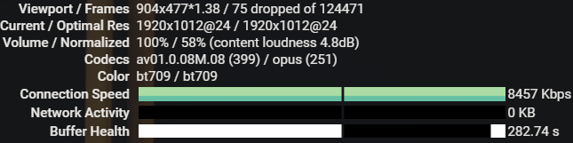
Trojan:
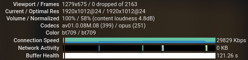
Trojan-go:
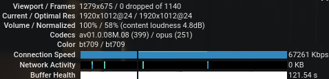
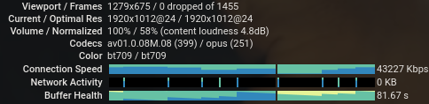
Trojan-go is a variant of Trojan which outperforms its predecessor.
Update 1
After using Trojan for a few days, I find Trojan is not that magical. It becomes slower. I guess the GFW has found a way to identify Trojan traffic, or it just noticed that the outgoing traffic to my VPS is unusually active and blocked it. But I can still reach my VPS, so my VPS is not on the IP blacklist.
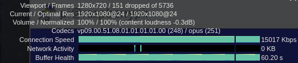
Another thing is that Trojan takes a longer time to establish a connection than SS, probably because of the TLS handshake. The latency is about 5 seconds and is unbearable.
Here is an analysis based on the Wireshark capture:
In the beginning, my laptop shook hands with VPS; we can see that both sides support SACK; the MSS is of normal size.
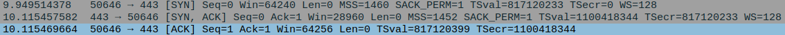
The client said hello to issue a TLS handshake. A 0.5-second timeout occurred, the client resend the hello again. The last ACK of the TCP handshake phase didn't arrive at the server in time, so the server resend its SYNACK. But that doesn't imply anything; the same thing can happen to any TCP-based protocol.
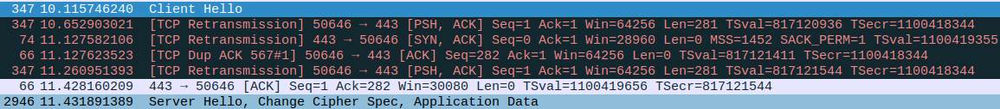
By the time the client sent its application Data at 11.51, 1.57 seconds had elapsed.
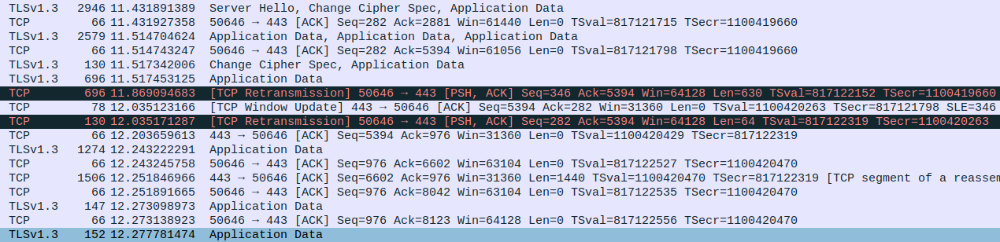
In comparison, SS sent its first application data in about 0.3 seconds, which means Trojan is five times slower. The comparison is not accurate, I only test them once, but there is no doubt that TLS handshake is time-consuming.
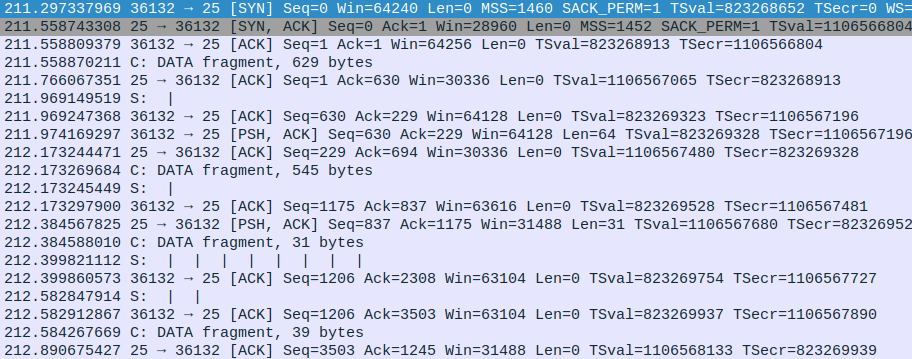
In fact, Trojan takes much more time than 1.5 seconds because the requests it issues was redirected many times:
Wget via SS:
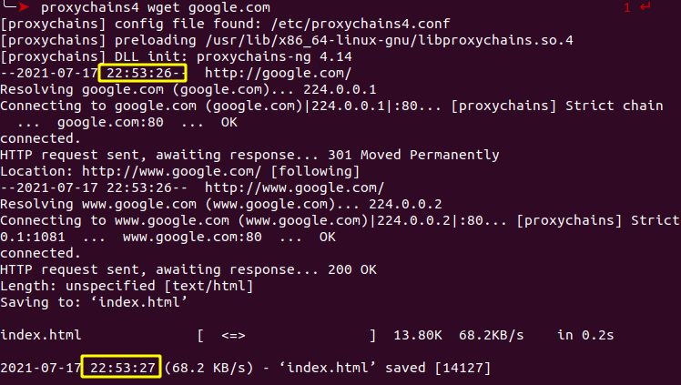
Wget via Trojan:
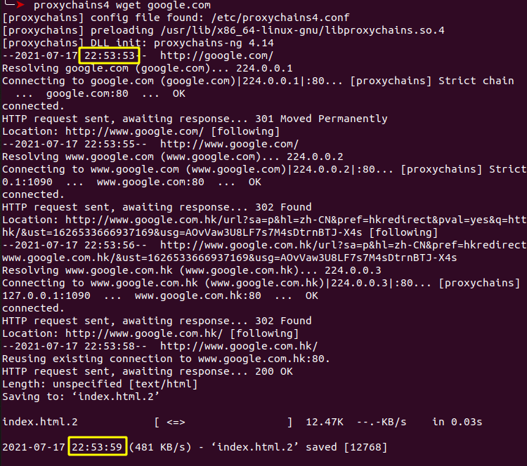
In conclusion, a TLS handshake slows the traffic, but the main cause of Trojan latency is 302 redirection. It's probably a DNS problem, as my VPS is in JP, but the requests were redirected to HK. I will tend to it later.
Update 2
So I set out to see what happened in the DNS querying stage. There are dozens of DNS solutions to the lockdown. I have been using ChinaDNS, the idea of which is simple, that is, to drop any reply that is from domestic DNS but with a foreign-IP answer. After knowing how its works, I lose faith in it, I don't think it is robust enough to resist the powerful and ever-developing wall, so I decide to use something else, for example, overture. But before that, I need to check out what is 302 redirection exactly and why Trojan gives rise to so many 302s while SS does not.
302
We have seen 302 redirections happened when using wget over Trojan. The same thing happens when I use Chrome to browse 142.250.196.142, the IP address of google.com replied by ChinaDNS. It is an Indian IP but hosts google.com.hk.
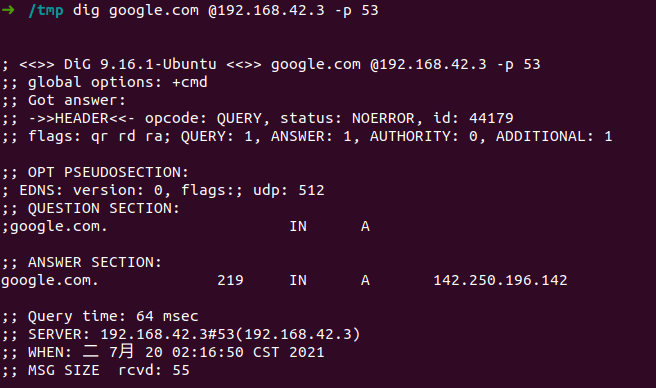
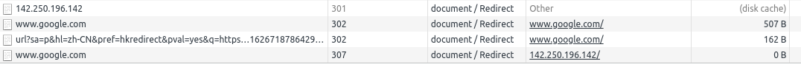
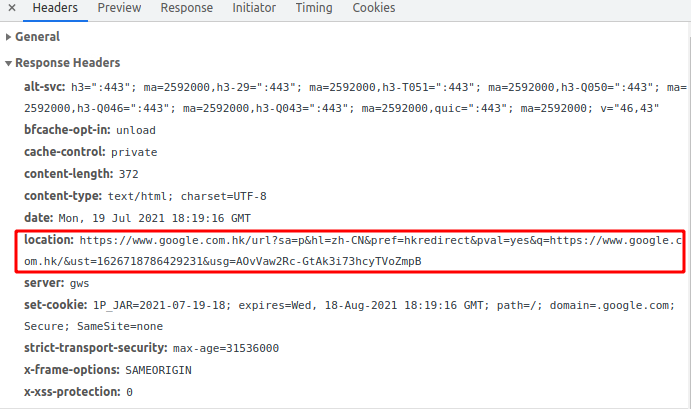
Now it makes sense: if the request URL is not https://www.google.com/*, Google will reply with 301/302/307 to demand the end-user to send another URL as specified in the location field. SS does not cause 302, but it causes 301, which is also one of the redirection instructions.
The last question is, why redirect my requests to India?
Let's try another foreign website that is impossible to host services in China(unlike bing.com, apple.com):
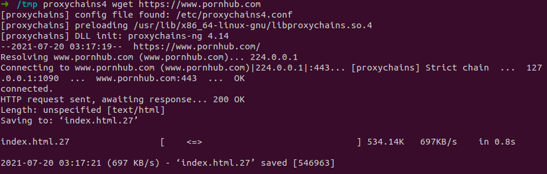
No redirection. Does it mean Google decides that I should visit India because India is closed to China? Is my DNS resolver using ECS? Let's say it uses ECS; wouldn't Google recognizes that my requests via SS are also from China?
I dig google.com on my Japanese VPS, and the result is a Japanese IP.
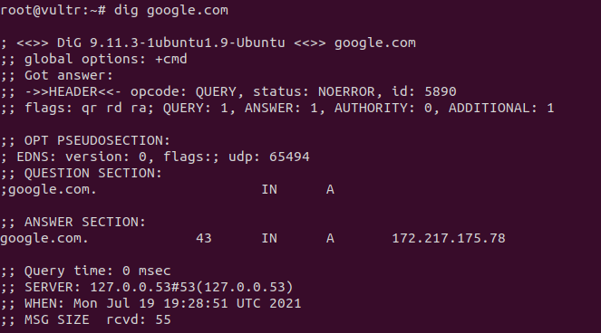
The next test is embarrassing because requests from Japan to Google are also redirected to Hong kong; 172.217.175.36 is a Japan Address.
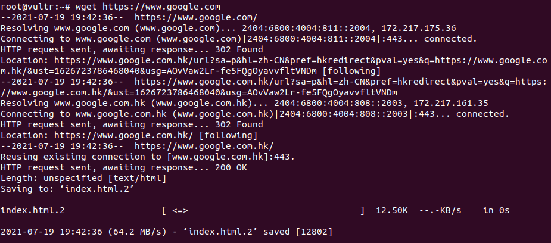
I google around and find a lot of people complain about the redirection. There's nothing we can do about it.
I forget to write down one thing before all those tests and screenshots: to shorten the time spent establishing a connection, I wrote my Trojan domain in /etc/hosts to get rid of the DNS query and gained a 2-second boost. Another strange thing is now it only takes 1 second to reach google.com using Trojan(at midnight).
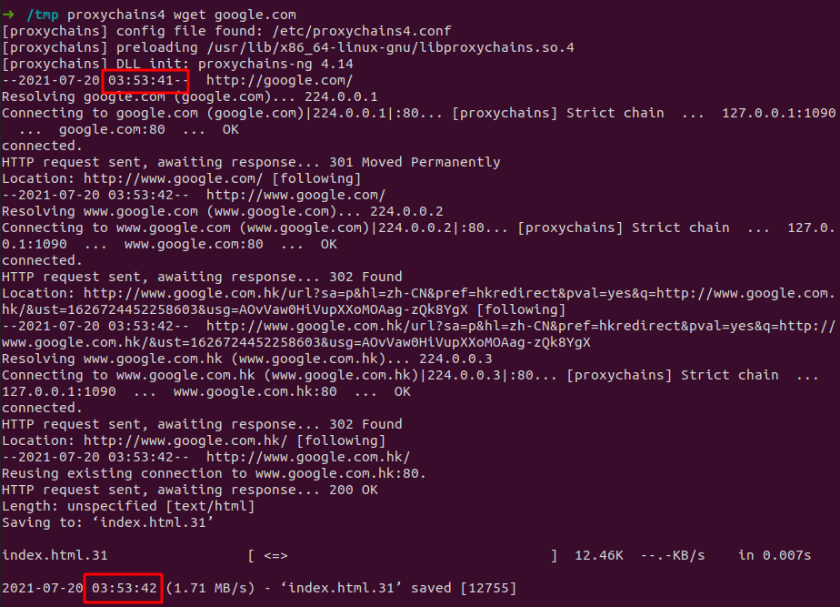
Everything suddenly works properly. It's surprisingly fast even there were three redirections which added up to at least 4 RTT but still did not exceed 1 second. A few days ago, it was another way around. It's midnight; maybe the wall is shut down for maintenance.
Difference between SS and Trojan
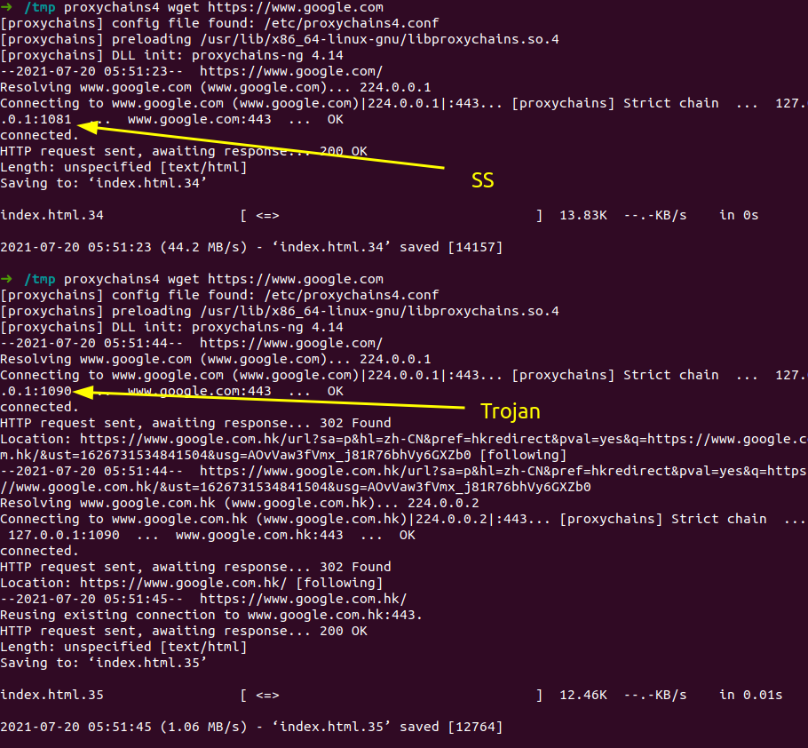
The figure above shows that both SS and Trojan do not cause 301 redirections because this time the URL is complete; most importantly, SS doesn't cause 302 redirections while Trojan does, which means Trojan has a bug. The reason must be known for the sake of knowledge. In what way? We don't debug their code unless we have no choice. And messages sent to the VPS are encrypted; without adding logs to their codes, there is no way to see what's going on. But on the other side of the proxy, things are not that encrypted, so that we can try our luck there.
Here is the difference between their DNS queries:
SS: query both IPV4 and IPV6 addresses, using DNS over IPV4
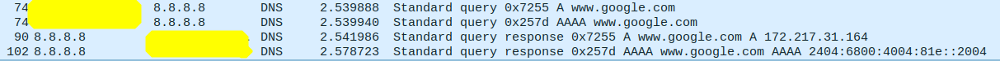
Trojan: DNS over IPV6, we can see the VPS was querying for google.com.hk. The query is undoubtedly caused by a re-sent request after 302 redirections.
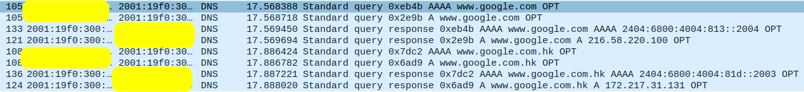
SS: HTTPS over IPV4
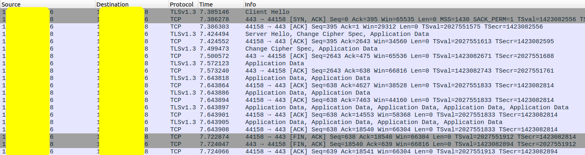
Trojan: HTTPS over IPV6
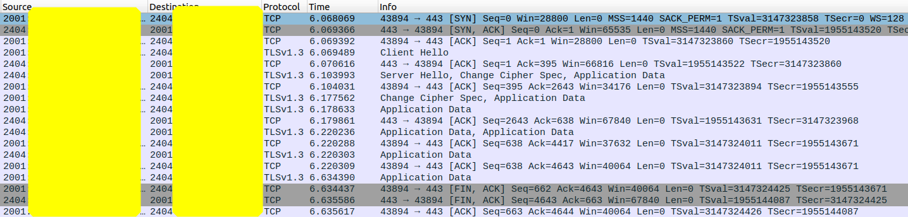
The redirections are caused by using IPV6. So stupid. Confirm the stupidity using strace, we shall see:
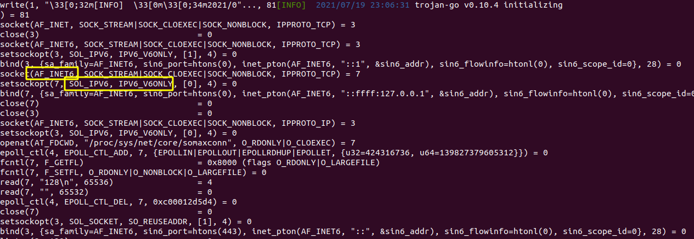
Trojan-go is using IPV6 behind our back! Luckily, we can change the configuration:
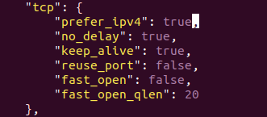
Restart the proxy server, no more 302 this time:
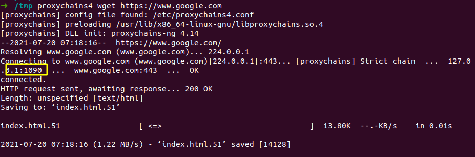
What's the point of using IPV6? I am not against the future, but if IPV4 works just fine, there is no need to replace it with this god damned IPV6; what if the server we want to connect with does not support IPV6? For example:
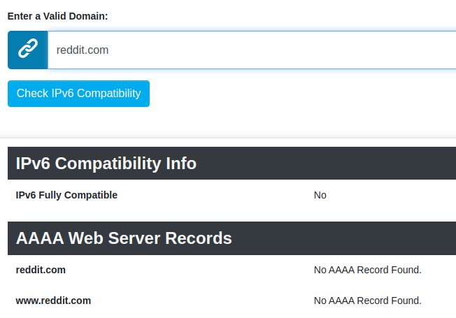
An APP on my phone failed to load its buttons because its server does not support IPV6; it felt like a joke. Here is the funny thing: everybody would blame the wall for packet loss and low speed; it's a lot easier; but hardly someone would suspect it's the developers' fault; even though there are 3.5K stars for the project and the number of developers adds up to almost 20, no one has doubts on 302 redirections, and no one uses an IPV6-incompatible APP. But still, it's a minor mistake compared to the great deeds those developers have made.
Final Conclusion
- Embedded scientific traffic in HTTPS is hard to detect, so GFW may let scientific responses be shipped inside.
- Don't forget to disable IPV6. Results from Google IPV6 DNS bring forth 302 redirections. If the wall is in rage and kills incoming packets randomly, then redirections will make you suffer. In the meantime, not every service is IPV6 compatible. IPV6 is not prepared; do not use it.
Update 3
I have been using Trojan for about 3 months, I have to say that Trojan is getting slow, 50 KiB/s in average, when I switch to sslocal, the speed grows up to 160 KiB/s. What happened in the last 3 months is that the wall is becoming increasingly severe, Trojan just performs worse in dire situations.